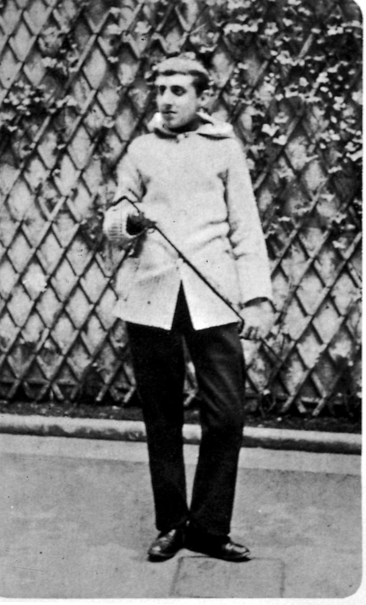
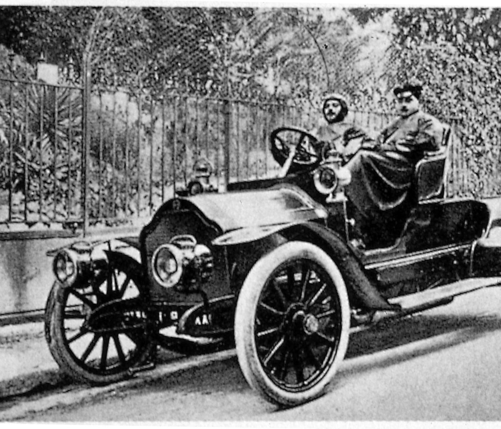

Floransa Notları’yla Ruskin’e çok büyük keyif vermiş Prenses Madam Alexandre de Caraman-Chimay’a duyduğum derin hayranlığın anısına, Madam’ın hoşuna gittiği için bir araya getirdiğim bu sayfaları saygılarımla adıyorum.
Bize yaşanmamış gibi gelen çocukluk yıllarımızda, çok sevdiğimiz bir kitapla geçirdiğimiz günler kadar dolu dolu yaşanmış başka zaman belki yoktur. Başkalarına göre bu çocukluk günlerini dolduran, bizimse, kutsal bir zevki kabaca engelliyor diye uzaklaştırdığımız her şey: kitabın en ilginç bölümündeyken oyun oynayalım diye bizi aramaya gelen bir arkadaş; gözlerimizi sayfadan ayırmak ya da yerimizi değiştirmek zorunda bırakan rahatsız edici güneş ışığı ya da arı; tadına bakalım diye getirilen yiyecekler –ki, dokunmadan, yanımızda, sıranın üzerinde bırakmışken, tepemizde, mavi gökyüzünde güneşin ışıkları zayıflar, akşam yemeği için içeri girmemiz gerekir, oysa bizim aklımız fikrimiz yemeğin hemen ardından çıkıp kitabın yarım kalan bölümünü bitirmektedir–; kitap okurken sadece uygunsuz bir şey olarak algıladığımız bütün bu şeyler, tersine öylesine tatlı (o dönemde bu denli bir aşkla okuduğumuz kitaptan çok daha değerli olduğunu şimdi anladığımız) bir hatırayı içimize işliyordur ki, bugün bile geçmiş zamanın bu kitaplarını karıştırmak aklımıza gelirse, bu kitapları, geçmiş günlerden kalan tek takvim olarak ve artık var olmayan evlerin ve gölcüklerin, sayfalarına yansıdığını görme umuduyla karıştırırız.
Rahatça okuyabilecek kadar dingin ve dokunulmaz, günün her saatine sırasıyla sığınılan tatil günlerindeki bu okumaları kim anımsamaz. Sabahları, park dönüşü, herkes “bir gezinti yapmaya” gitmişken, henüz uzak olan yemek saatine kadar sesi soluğu pek çıkmayan ihtiyar Félicie dışında kimsenin girmediği ve duvara asılı boyalı tabaklar; bir önceki günün yaprağı henüz koparılmış takvim; karşılık beklemeden konuşan ve anlamca boş tatlı sözleri, okuduğunuz sözcükleri değiştiren insanların laflarından farklı, duvar saati ve ocak türünden okumaya çok saygılı arkadaşların bana eşlik ettiği yemek odasına süzülüverirdim. Sabahları erken kalkan bahçıvan amcamın yemek sırasında, “Rahatsız etmiyor ya! Biraz ateş insana iyi gelir; sizi temin ederim ki, saat altıda bostan pek soğuk oluyor. Sekiz gün sonra Paskalya olduğuna kim inanır!” diye sözünü ettiği küçük odun ateşinin yanına, bir iskemleye ilişirdim. Okumaya, ne yazık ki son verecek olan yemeğe hâlâ iki büyük saat vardı. Zaman zaman pompanın gürültüsü işitilir; su sızdırdığından bakışlarınız pompaya yönelir ve orada, çok yakındaki, yarım ay biçiminde tuğla ve fayanslarla kaplı menekşe tarhları olan –bu menekşeler, sanki şu çok güzel gökyüzünden, şu yanardöner renkli ve kimi zaman köy çatıları arasından görülen kilisenin vitraylarında yansır gibi olan gökyüzünden, fırtınadan önce ya da sonra, çok sonra, gün batarken beliren hüzünlü gökyüzünden derlenmiş gibidir– küçük bahçenin tek ağaçlıklı yolundaki kapalı pencereden pompaya bakardınız. Ne yazık ki, aşçı kadın sofrayı kurmaya pek erken gelirdi; bari konuşmadan kursa! Ama, “Böyle rahat değilsiniz, size bir masa yanaştırayım mı?” demek zorunda sanırdı kendini. “Hayır, teşekkür ederim,” diyebilmek için birdenbire susmak ve gözlerin okumakta olduğu bütün sözcükleri dudakların arasında sessizce, koşarak tekrarlayan sesi uzaklardan geri getirmek gerekirdi; sesi durdurmak, dışarı çıkarmak ve uygunca, “hayır, teşekkür ederim,” diyebilmek için bu sözcüklere kaybetmiş oldukları olağan yaşam görünümünü ve yanıt vurgusunu vermek gerekirdi. Zaman geçerdi, yorulup gezintiyi kısa kesenler, “Méséglise’den dönenler” ya da “yazacak şeyleri olduğundan” o sabah çıkmayanlar, çoğu zaman, yemekten çok önce yemek salonuna gelmeye başlardı. “Seni rahatsız etmek istemem,” derlerdi ama ânında ateşe yaklaşmaya, saate bakmaya, yemeğe oturmanın pek de fena olmayacağını söylemeye başlarlardı. “Yazmak için kalmış” erkeğin ya da kadının etrafını özenle çevirirler ve saygı, sır, çapkınlık ve ihtiyat içeren bir gülümsemeyle ona, “Minik yazışmanızı tamamladınız mı?” diye sorarlardı, sanki bu “minik yazışma” hem bir devlet sırrı, bir ayrıcalık, hem de keyif kaçırıcı bir şeymiş gibi. Bazıları daha fazla beklemeden, masaya, kendi yerlerine önceden otururdu. Bu bir felaketti, çünkü bu davranış sonradan gelenlere çoktan öğle olduğunu düşündürtecek ve ailemi, “Hadi, kapa kitabını, yemek yiyeceğiz,” gibi öldürücü sözleri söylemeye yöneltecek kötü bir örnekti. Her şey hazırdı, sofra örtüsünün üzerine bütün sofra takımı yerleştirilmişti, sadece yemeğin sonunda getirilen şey eksikti: bahçıvan ve aşçı amcanın bizzat masada kahve yaptığı camdan aygıt; bir fizik aleti gibi karmaşık, boru biçimindeki bu aygıt güzel kokardı ve buğulanmış çeperlerde kokulu ve kahverengi bir kül bırakan ani kaynamayı cam kapakta görmek çok hoştu; yine bu amca, her zaman aynı oranlarda karıştırdığı krema ve çilekleri, renklerle uğraşan bir ressamın deneyimi ve bir oburun uzgörüsüyle, gereken pembeliğe eriştiklerinde karıştırmayı durdururdu. Yemek bana ne kadar da uzun gelirdi! Büyük halam itirazı hoşgörü ile karşılayan ama kabul etmeyen bir tatlılıkla düşüncesini belirtmek için tadardı yemekleri sadece. Bir roman, dizeler, haddini iyi bildiği şeyler hakkında, bir kadın alçakgönüllülüğüyle daha bilgili olanların düşüncesine her zaman güvenirdi. Bu konuların, tek bir kişinin beğenisinin doğruyu saptamaya yetmediği geçici heveslerin belirsiz alanı olduğunu düşünürdü. Ama kurallarını ve ilkelerini annesinden öğrenmiş olduğu birtakım konular; kimi yemeklerin yapılışı, Beethoven’in sonatlarını çalma ve nezaketle konuk ağırlama hakkında kusursuzluğun ne olduğunu bildiğine ve öbür insanların bu kusursuzluğu ne kadar yakın olduğunu ayırt ettiğine emindi. Zaten bu üç konuda da kusursuzluk hemen hemen aynı şeydi: yeteneklerde bir tür basitlik, sadelik ve sevimlilik. Kesinlikle baharat konulmaması gereken yemeklere baharat konmasına, piyano çalarken gereğinden fazla pedal kullanılmasına ya da yapmacık çalmaya, “misafir kabul ederken” kusursuz bir doğallıktan çıkılmasına ve insanın kendinden abartıyla söz etmesine şiddetle karşı çıkardı. Daha ilk lokmadan, ilk notalardan, basit bir belirtiden yola çıkarak karşısındakinin iyi bir aşçı, gerçek bir müzisyen, iyi yetiştirilmiş bir kadın olup olmadığını bildiği iddiasındaydı. “Benden daha hünerli olabilir ama bu kadar basit bir andanteyi böyle abartıyla çalarak zevkten yoksun olduğunu gösteriyor.” “Çok parlak ve nitelikli bir kadın olabilir ama kendinden bu denli ayrıntılı söz etmesi incelik eksikliği.” “Çok bilgili bir aşçı olabilir ama patatesli biftek yapmayı bilmiyor.” Patatesli biftek! Gözde yarışma parçası, basitliğiyle bile zor, mutfağın bir tür Patetik Sonatı, toplumsal yaşamda bir hizmetçi üzerine sizden bilgi almaya gelen, incelikli ve eğitimli olup olmadığını çok basit bir davranışla kanıtlayabilen soylu kadının ziyaretinin gastronomik eşdeğeri! Büyükbabam gururuna öyle düşkündü ki, bütün yemeklerde başarılı olunsun isterdi ve yemek yapma konusunda ne zaman başarısız olunduğunu asla anlayamayacak kadar az şey bilirdi. Çok ender de olsa kimi zaman başarısız olunduğunu kabul edebiliyordu ama tamamen rastlantı sonucu. Tersine, aşçı kadının falanca yemeği yapmayı bilmediğine ilişkin büyük halamın her zaman gerekçelendirilmiş eleştirileri, büyükbabama hoşgörüden özellikle yoksun gelirdi. Genellikle, büyük halam yemeği dudağının ucuyla tattıktan sonra, onunla tartışmaktan kaçınmak için düşüncesini belirtmezdi, zaten biz de hoşuna gitmediğini ânında anlardık. Susardı ama büyükbabamı öfkeye boğmaya yetecek, kesin ve kararlı bir onaylamazlığı uysal gözlerinden okurduk. Büyük halamın sessizliği karşısında sabrı taşan büyükbabam, inceden inceye alay ederek düşüncesini belirtmesini rica eder, sorularla onu sıkıştırır, kızdırırdı, ama halamın, büyükbabamın düşüncesini, ara yemeğin fazla şekerli olmadığını doğrulamak yerine, azap çekmeye razı olduğu hissedilirdi.
Yemekten sonra hemen okumaya koyulurdum; özellikle o gün hava biraz fazla sıcaksa, herkes “odasına çekilmeye” çıkardı, bu da benim, insanın kendini sokakta bulmak için bir çocuğun sıçrayarak bile pencerelerinden atlayabileceği kadar alçak olan birinci kattaki odama dar basamaklı küçük merdiveni çıkarak hemen çekilmemi sağlardı. Penceremi kapamaya gittiğimde, rüzgârlıkları indirme bahanesiyle her gün yemekten sonra kapısının önüne sigarasını içmeye çıkan ve sokaktan geçerken kimi zaman sohbet etmek için duran insanlara merhaba diyen karşıdaki silahçının selamına karşılık verirdim. İngiliz dekoratörler ve Maple tarafından uygulanagelmiş William Morris teorileri, bir odanın sadece bize yararlı şeylerle dolu olma ve yararlı her şeyin, basit bir çivi bile olsa, gizli değil ortada olma koşuluyla güzel olduğunu kesin olarak belirtir. Bakır çubuklu ve üstü tamamen açık yatağın üzerinde, bu temiz odaların çıplak duvarlarında kimi başyapıtların taklitleri. Bu estetiğin kurallarına göre değerlendirildiğinde benim odam asla güzel değildi, çünkü hiçbir işe yaramayacak şeylerle doluydu ve bunlar, bir işe yarayacak şeyleri, kullanımlarını son derece güçleştirecek kadar duyarlıkla gizliyordu. Ama bence odam güzelliğini tam da, benim rahatım için değil, sanki kendi zevkleri için oraya gelmişe benzeyen bu şeylerden alıyordu. Sanki bir tapınağın dibine yerleştirilmiş yatağı gözlerden gizleyen o uzun beyaz perdeler; gündüzleri yere saçılan süslemeli yumuşak ipek yatak örtüsünün, çiçekli karyola örtüsünün, nakışlı yatak örtüsünün, patiska yastık kılıflarının altındaki yatağım, Meryem yortusunda fistolar ve çiçekler altında kaybolan sunak gibi kayboluyordu, ve geceleri, yatabilmek için bütün bunları geceyi geçirmeyi kabul ettikleri bir koltuğun üzerine özenle yerleştiriyordum; yatağın yanında, mavi desenli bardak, aynı desenden şekerlik ve (dökmemden çekinen halamın emri üzerine geldiğimin ertesi gününden beri boş duran) sürahi üçlüsü ile öteki araç gereçler; görmezden gelmenin de, kişisel gereksinimlerim için kullanmanın da mümkün olmadığını bildiğim, ama soyunurken, yanlış bir hareketle deviririm korkusuyla uzun uzun dikkatle baktığım bir tür ibadet araç gereçleri –bunlar, neredeyse cam bir ampül içinde yanlarına yerleştirilmiş portakal çiçeği likörü kadar kutsaldır–; okumayı bitirdiğim ve her kalkmak istediğimde yapışıp kaldığımı fark ettiğime göre dikensiz olmasına imkân olmayan beyaz güllerden örtüsü koltukların sırtına fırlatılmış tığ işi ajurlu o küçük atkılar; fanus altında kaba temaslardan korunan sarkacı, uzaktan gelen deniz kabuklarıyla ve eski, duygusal bir çiçekle içtenlikle gevezelik eden ama yerinden kımıldatılamayacak kadar ağır olduğundan, sarkaç durduğunda saatçi dışında kimsenin onu yeniden kurmaya girişecek kadar ihtiyatsız olmadığı o camdan çan; birinde İsa’nın resmi, ötekinde kutsanmış şimşir iki vazoyla süslü konsolun üzerine bir sunak kaplaması gibi atılmış olduğundan, konsolu Kutsal Masa’ya benzeten (her gün, “oda yapıldığında” oraya yerleştirilen bir dua iskemlesi bu düşüncenin çağrışımını tamamlıyordu) ama her zaman çekmece aralarına sıkışan tiftikleri oyunu tamamen imkânsız kıldığından, İsa’nın resmini, kutsal vazoları, kutsanmış şimşiri bir hamlede düşürmeden ve sendeleyip dua iskemlesine tutunmadan tek bir mendil bile alamadığım şu beyaz güpür sofra örtüsü; küçük etamin perdelerin, büyük muslin perdelerin ve daha büyük pazen perdelerin oluşturduğu üst üste asılmış üçlü; bu perdeler genellikle güneşlenmiş akdiken beyazlığı içinde her zaman güleryüzlüydü ama koşut tahta çubukları etrafında hareket etmedeki ve pencereyi açmak ya da kapamak istediğimde birbirlerinin arasına ve hep birlikte de pencereye sıkışmadaki beceriksizlikleri ve inatları yüzünden de aslında oldukça sinir bozucuydular, bir perdeyi kurtarmayı başardığımda, sanki perdeler, gerçek akdiken çalısı ya da orayı seçecek kadar hayal gücüne sahip kırlangıç yuvaları tarafından kusursuz biçimde tıkanmışçasına, eklemlerdeki yerini almaya öbürü her zaman anında hazır oluyordu, öyle ki, görünüşte çok basit bu işlemi, penceremi açma ya da kapama işlemini, evden birinin yardımı olmadan asla başarıyla sonuçlandıramıyordum; benim hiçbir gereksinimimi karşılamamaları bir yana, bunların tatminine hafif de olsa köstek bile olan ve elbette asla biri yararlansın diye odama konmamış bütün bu şeyler, odamı bir anlamda kişisel düşüncelerle, genellikle ağaçsız bir alandaki ağaçlarda ve yol kıyısında ya da eski duvarların üzerinde biten çiçeklerde görülen bu tercih havasıyla, orada yaşamayı ve oradan hoşlanmayı seçmiş olma havasıyla dolduruyordu. Bu eşyalar odayı sessiz ve değişken bir havayla, kişiliğimi hem yok eden hem de büyüleyen bir esrarla dolduruyordu; bu odayı bir tür küçük kilise haline sokuyordu; güneş –amcamın pencerelerin tepesine eklemiş olduğu küçük kırmızı karoları geçip– perdelerin akdikenini pembeleştirdikten sonra duvarların üzerine, sanki bu küçük kilise vitraylı daha büyük bir nefin içine hapsedilmiş gibi garip ışınlar yolluyordu; ve zaten önemli bayramlarda, kutsal emanetlerin çiçekli yoluyla evimize bağlanan kilisenin yakınlığı nedeniyle çanların gürültüsü öyle güçlü geliyordu ki çanların sanki bizim çatıda, dua kitabını elinde tutan papazı, akşam duasından dönen halamı ya da bize kutsanmış ekmek getiren kilise korosundaki çocuğu sık sık selamladığım pencerenin tam üzerinde çaldığını hayal edebiliyordum. William Morris’in işlevsiz güzelliğe tanıdığı ayrıcalıkla, Maple odalarının duvarlarında, şöminenin üzerinde duran Botticelli’nin İlkbahar’ının Brown tarafından çekilmiş fotoğrafına ya da Lille Müzesi’ndeki Meçhul Kadın mulajına gelince, itiraf etmeliyim ki, benim odamda onların yerine, önü işlemeli asker ceketi içinde olağanüstü ve yakışıklı Prens Eugène’i temsil eden bir tür gravür vardı ve bir gece, şiddetli lokomotif ve dolu gürültüsü altında, bir bisküvi markasının reklamını yaptığı gardaki bir büfenin kapısında, her zamanki gibi olağanüstü ve yakışıklı haliyle onu görünce çok şaşırdım. Bugün, bu gravürün sonsuza dek duracağı odama yerleşmeden önce, eskiden bir fabrikatör tarafından büyükbabama cömertlik olsun diye prim olarak verildiğinden kuşkulanıyorum. Ama o zaman, bana tarihi ve esrarlı gelen kökeninden kuşku duymuyordum ve benim tarihi bir kişilik, kendisiyle odamı paylaştığım kalıcı bir oda sakini olarak kabul ettiğim ve her yıl, hiç değişmeden karşımda bulduğum kişinin birçok kopyasının olabileceğini hayal bile edemiyordum. Şimdi onu görüşümün üzerinden epey zaman geçti, bir daha da göreceğimi sanmıyorum. Ama talih bir gün onu karşıma çıkarırsa, hakkında Botticelli’nin İlkbahar’ından daha fazla şey söyleyebileceğimi sanıyorum. Değerli bir resmi oyma tahtadan bir çerçeveye emanet edip koruma zahmetini zihinlerden uzaklaştırarak evlerini hayran oldukları başyapıtların röprodüksiyonlarıyla süslemeyi zevk sahibi insanlara bırakıyorum. Odalarını zevklerine göre döşemeyi ve sadece onaylayabilecekleri şeylerle doldurmayı da zevk sahibi insanlara bırakıyorum. Bense, kendimi, her şeyi benimkinden çok farklı hayatların, benimkine karşıt bir zevkin yaratısı ve dili olduğu bir odada, bilinçli düşünceme ait hiçbir şey bulamayacağım, hayal gücümün kendini ben olmayanın bağrına gömülmüş hissederek coştuğu bir odada ancak yaşıyor ve düşünüyor hissederim; uzun, soğuk koridorlu, dışarıdaki rüzgârın kaloriferin ısıtma çabalarına başarıyla karşı koyduğu, duvarlarını hâlâ ilçenin coğrafi haritasının süslediği, her sesin sessizliği yerinden oynatarak görünür kıldığı, odalarda hava akımının temizlediği ama silinmeyen bir kapatılmışlık kokusunun korunduğu ve bu duruma hayran kalan, bu kokuyu düşünce ve hatıra olarak içerdiği her şeyle birlikte kendi içinde yeniden yaratmayı denemek için ona bir model gibi poz verdiren hayal gücüne ulaştırmak için yüzlerce kez teneffüs ettiren; geceleyin, odanın kapısını açtığında, insanın, orada dağınık duran tüm bir hayata tecavüz etme hissine kapıldığı ve kapıyı kapayıp, daha ileriye, masaya ya da pencereye kadar ilerlediğinde, bu hayatı çekinmeden elinden tuttuğunu sandığı; ilçe merkezindeki halıcının Paris zevki sanarak döşediği kanepenin üzerine bu hayatla birlikte bir tür hafifmeşreplikle oturma hissine kapıldığı; başkalarının ruhuyla ağzına kadar dolu olan ve ızgaraların biçimine ve perdelerin desenlerine kadar onların düşlerinin izlerini koruyan bu odada, eşyaları şuraya buraya koyarak efendi rolü taslayıp, odadaki meçhul halı üzerinde çıplak ayak yürüyerek ve insanın samimiyetle kendi kafasını karıştırma niyetiyle her yerde bu hayatın çıplaklığına dokunma hissiyle dolup taştığı gar yolu, rıhtım ya da kilise meydanındaki bu taşra otellerinden birine ayak bastığımda kendimi ancak mutlu hissederim; o zaman, insan titreyerek sürgüyü çektiğinde, bu gizli hayatı kendisiyle birlikte kapadığını, önünde, yatağa doğru ittiğini ve nihayet üzerine çektiği büyük beyaz çarşaflarda onunla birlikte yattığını sanır, oysa, çok yakındaki kilise, can çekişenlerin ve âşıkların uykusuzluk saatini bütün şehir için çalmaktadır.
Köye [1] bir kilometre uzaklıktaki parka gitmek gerektiğinden uzun süredir odamda okuyamıyordum. Ama bu zorunlu oyun bitince, sepetlerde getirilen ve nehir kıyısında, kitabın el sürmemek kaydıyla bırakıldığı çimenlerin üzerinde çocuklara dağıtılan ikindi kahvaltısını kısa kesiyordum. Biraz ilerde, parkın oldukça bakımsız ve esrarlı kimi kuytularında, nehir, kuğularla dolu ve heykellerin gülümsediği ağaçlı yollarla çevrili, kimi zaman sazan balıklarının sıçradığı düz çizgi halinde akan yapay bir su olmaktan çıkıyor, hızlanıyor, hızla akarak parkın kapısını geçiyor ve sözcüğün coğrafi anlamında bir nehir haline geliyordu, bu nehrin bir adı olmalıydı, sularının sarı düğünçiçeklerine boğduğu ve öküzlerin uyuduğu, tam bir batağa dönmüş çayırlık benzeri otlaklar arasında dağılmakta gecikmiyordu (tıpkı heykeller arasında ve üzerinde kuğular yüzerken olduğu gibi mi?) ve bir yanıyla, ortaçağdan kaldığı söylenen biçimsiz, yıkıntı kulelerle köye bağlanırken, öte yandan kuşburnu ağaçlarıyla ve akdikenlerle kaplı patikalarla başka adları olan bilinmedik köylerin sonsuza uzanan “doğa”sına kavuşuyordu. Ben, parkın aşağısında, kuğuları seyrederek ikindi kahvaltısını bitirmeyi ötekilere bırakıyordum ve karmakarışık yollarda koşarak, kuşkonmaz fidesine, çilek fidanlarının bittiği yere, bazı günler atların çevresinde dönerek suyunu yükselttikleri havuza, arada bir yukarıda “parkın sonu” olan kapıya ve ötedeki peygamberçiçeği ve gelincik tarlalarına bakarak, sırtımı budanmış fındık ağaçlarına dayayarak oturduğum, kimsenin beni kolay kolay bulamayacağı yeşilliklerden herhangi birine kadar gidiyordum. Bu yeşillikte derin bir sessizlik vardı, keşfedilme tehlikesi neredeyse yoktu, aşağıdan bana boş yere seslenenlerin, hatta kimi zaman yaklaşıp ilk bayırları çıkanların, her yeri aradıktan sonra eli boş dönenlerin uzaklaşan çığlıkları güvenliği daha hoş kılıyordu; bu çığlıklar da uzaklaşınca hiç gürültü kalmıyordu; sadece zaman zaman, uzakta, ovaların ötesindeki çanların mavi gökyüzünün ardında çınlıyor gibi gelen altın sesi geçen zaman konusunda beni uyarabiliyordu; ama bu sesin tatlılığından şaşkına dönerek son çan vuruşlarının içini boşalttığı daha derin sessizlik kafamı karıştırdığından vuruş sayısından asla emin olamıyordum. Bu ses, köye girerken yakından bakıldığında yüksek ve sarp görünümünü yeniden kazanan, akşamın mavisi üzerinde kargaların belirginleştirdiği arduvazdan baca şapkası dimdik yükselen kiliseye yaklaşıldığında işitilen, gökgürültüsünü andıran ve “yeryüzünün iyiliği için” meydanda pare pare çınlayan çanların sesi gibi değildi. Bu çan sesleri, parkın ucuna hafif ve cılız ulaşıyordu ve bana değil, bütün kıra, bütün köylere, tarlalarında yalnız başına olan köylülere sesleniyordu, beni asla başımı kaldırmaya zorlamıyordu, zamanı uzak ülkelere taşıyarak, beni görmeden, beni tanımadan ve rahatsız etmeden yanımdan geçiyordu.
Ve kimi zaman evde, yatağımda, yemekten çok sonra, kitap okumak için akşamın son saatlerine sığındığım da oluyordu ama bu sadece bir kitabın son bölümlerine geldiğim, bitirmek için fazla okumanın gerekmediği günlerdi. O zaman, eğer yakalanırsam cezalandırılmayı ve kitap bittiğinde, belki bütün gece sürecek uykusuzluğu göze alarak, evdekiler uyur uyumaz mumumu yeniden yakıyordum; hemen yakınımızdaki silahçının eviyle postane arasındaki sokak sessizliğe bürünmüşken, karanlık ama yine de mavi gökyüzü yıldız doluyordu, ve solda, kıvrılarak birdenbire tırmanmaya başlayan küçük dik sokakta, geceleri uyumayan canavar gibi ve karanlık heykelli kilise apsisinin ortalığı gözlediği hissediliyordu; bu bir köy kilisesi olmasına karşın tarihi bir yerdi, Ulu Tanrı’nın, kutsanmış ekmeğin, rengârenk giysili azizlerin ve komşu şatolardaki soylu hanımların büyülü konutu! Bu hanımlar bayram günlerinde pazarda dolaşırken tavukları bağırtıyor ve dedikoducu kadınları kendilerine baktırıyor, ayine “koşum takımlarıyla” gelip, dönüşte müminlerin dolaplı kapıyı iterek sahına yakutlar serptiği sundurmanın gölgesini terk eder etmez meydandaki pastacıdan, aylak ve şekerli kokusu benim için büyük ayin çanlarına ve pazarların neşesine karışıp kalmış, bir storla güneşten korunan kule biçimindeki pastalardan –“pralinli bisküvi”, “krem şantili çörek” ve “bademli pasta”– birkaç tane satın alıyordu.
Son sayfa okunduktan sonra kitap bitiyordu. Gözlerin çılgınca yarışını ve gözleri gürültüsüzce izleyen ve sadece nefes almak için derin bir iç çekişle duran sesinkini durdurmak gerekiyordu. O zaman, uzun zamandan beri içimde uyanan kargaşaları yatıştırmak ve öbür hareketleri yönetmek için ayağa kalkıyor, yatağım boyunca aşağı yukarı yürümeye koyuluyordum; öteki uzaklıklar gibi metreyle ya da mille ölçülmeyen ve ancak “başka şeyler” düşünenlerin “uzak” gözlerine bakıldığındakiyle karıştırılması zaten imkânsız bir ruh uzaklığında olmasına karşın odada ya da dışarıda boş yere aranan bir noktaya dikili duruyordu. O halde ne? Bu kitap bundan ibaret miydi? Bizi okurken gören ebeveynlerimiz heyecanımız karşısında gülümser bir hava takındığında, yapmacık bir ilgisizlik ya da sahte bir sıkıntıyla kitabı kaparken, yaşayan insanlardan daha fazla özen ve şefkat gösterdiğimiz, onlar için soluk soluğa kaldığımız bu varlıkları bir daha görememenin, haklarında hiçbir şey bilememenin içimizi parçaladığını itiraf edemeyiz. Yazar daha şimdiden birkaç sayfadan beri katı yürekli “Sondeyiş”inde, bu varlıkları buraya kadar adım adım izleyişindeki ilgiyi bilen biri için inanılmaz bir ilgisizlikle onları “uzaklaştırmaya” özen göstermişti. Hayatlarının her saatinde yaptıkları bize anlatılmıştı. Sonra ansızın: “Bu olaylardan yirmi yıl sonra Fougères sokaklarında hâlâ dimdik yaşlı bir adama rastlayabilirdiniz, vb.” [2] Ve ortaya çıkan her engelle korkup, ardından engel aşıldığında sevinerek iki cilt boyunca hayal meyal sezmek için hazırlandığımız o tadına doyum olmaz olasılığın, evliliğin kutlandığını, bizim anlık tutkularımıza ilgisiz, yazarın yerine geçmiş bir kişi tarafından yüksek semalarda yazılmış bu şaşırtıcı sondeyişteki ikinci dereceden birinin araya karışmış bir tümcesinden öğreniriz, ne zaman olduğunu tam olarak bilemeyiz. Kitabın devam etmesini çok isteriz ve eğer mümkünse, bütün bu kişiler üzerine başka bilgilere sahip olmak, şimdiki hayatlarından bir şeyler öğrenmek, bize esinledikleri [3] ve eksikliğini birden hissettiğimiz aşka tümüyle yabancı olmayan şeylere kendi yaşamımızı uygulamak, yarın, hayatımızla ilişkisi olmayan ve değeri hakkında kuşkusuz yanıldığımız, çünkü bu dünyada payına düşen, şimdi anladığımız kadarıyla ve gerektiğinde ebeveynlerimizin bize küçümseyici bir tümceyle öğrettikleri üzere, asla sandığımız gibi evreni ve yazgıyı kapsamak değil, noterin kütüphanesinde, Journal de modes illustré’nin ve Géographie d’Eure-et-Loir gibi önemsiz yıllıkların arasında çok az yer işgal etmek olan kitabın unutulmuş sayfasındaki adlardan başka bir şey olmayacak varlıkları, bir saat için boş yere sevmemiş olmayı isteriz ................................................ .... “Kralların Hazinesi”ne başlarken, bence okumanın niçin bu küçük eserde Ruskin’in ona atfettiği baskın rolü oynamaması gerektiğini göstermeden önce, hatırası her birimiz için bir Tanrı lütfu olarak kalması gereken çocukluğun sevimli okumalarını tartışma dışı bırakıyorum. Hiç kuşkusuz, bu okumalardan çıkardığım ilk sonucu –bu okumalardan bizde kalan şey, özellikle bizim bu kitapları okuduğumuz yerlerin ve günlerin imgesidir–, yaptığım açıklamanın uzunluğu ve niteliğiyle fazlasıyla kanıtladım. Bu imgenin büyüsünden kaçamadım: Okumadan söz etmek isterken, kitaplardan başka her şeyden söz ettim, çünkü okumalarım sırasında benimle konuşanlar kitaplar değildi. Ama belki okumaların bende birbiri ardına bıraktığı hatıralar benim okurumda da uyanacaktır, bu çiçekli ve sapa yollarda zaman kaybetse de okuma adı verilen özgün psikolojik edim, zihinde yavaş yavaş yeniden yaratılacak ve böylece benim belirtmem gereken kimi düşünceleri şimdi kendine aitmiş gibi izleyebilecek güce sahip olacaktır.
*
“Kralların Hazinesi”nin Ruskin’in, Manchester yakınında, Rusholme Belediyesi’nde, Rusholme Enstitüsü’nde bir kütüphanenin kurulmasına yardım amacıyla 6 Aralık 1864’te yaptığı okuma üzerine bir konuşma olduğu bilinmiyor. 14 Aralık’ta, Ancoats’ta okulların kurulmasına yardım etmek için kadının rolü üzerine, “Kraliçelerin Bahçeleri” adlı ikinci bir konuşma yaptı. Collingwood, Life and Work of Ruskin adlı olağanüstü yapıtında şöyle der: “Bütün bu 1864 yılı boyunca, Carlyle’ı sık sık ziyaret etmesi dışında evden çıkmadı. Aralık ayında Manchester’da ders verdiğinde, bu dersler Susam ve Zambaklar adı altında en bilinen eserini oluşturur, [4] düşüncesinin en parlak renkleri içinde fiziksel ve entelektüel olarak en sağlıklı durumda olduğunu ayırt edebiliriz. İleri sürdüğü kahramanca, aristokratik ve stoacı ideallerde ve kitapların ve halka açık kütüphanelerin değerini yeniden ele alışındaki ısrarda Londra Kütüphanesi’nin kurucusu Carlyle ile söyleşilerinin yankısını bulabiliriz...”
Burada Ruskin’in tezini tarihsel kökenleriyle ilgilenmeden kendi içinde incelemek isteyen bizler, tezi Descartes’ın şu sözcükleriyle oldukça doğru özetleyebiliriz: “Bütün iyi kitapları okumak, bu kitapların yazarı olmuş geçmiş yüzyılların en değerli insanlarıyla konuşmak gibidir.” Fransız filozofun zaten biraz kuru bu düşüncesini belki Ruskin bilmiyordu ama görkemleriyle en sevdiği ressamın peyzajlarını aydınlatan sisleri andıran İngiliz sislerinin eriyip, Apollonvari bir altına karıştığı konuşmasının her yerinde karşılaşılan şey gerçekte bu düşüncedir. “Dostlarımızı doğru seçme istencimizin ve zekâmızın olduğunu varsayalım,” der, “çok azımızın buna gücü yeter, tercih alanımız çok sınırlıdır. İstediğimiz kimseyi tanıyamayız... Büyük bir şans eseri, büyük bir şairi sezebilir ve sesinin tınısını işitebiliriz ya da bizi kibarca yanıtlayan bir bilim adamına bir soru sorabiliriz. Bir bakanın özel odasında on dakikalık görüşme elde edebiliriz, bir kraliçenin nazik bakışını hayatımızda bir kez yakalama ayrıcalığımız olabilir. Ve yine de bu kaçamak rastlantılara göz diker, yıllarımızı, tutkularımızı ve yetilerimizi bunun çok daha azı için harcarız, oysaki bu zaman süresince, konumumuz ne olursa olsun biz dilediğimiz sürece bizimle konuşacak insanlardan oluşan, bize sürekli açık bir toplum vardır. Ve bu o kadar kalabalık, o kadar uysal ve tüm gün yanımızda bekletebileceğimiz bir toplumdur ki –krallar ve devlet adamları gibi ilgi göstermek için değil, ilgi görmek için sabırla beklerler– bizler, kütüphanelerimizin ışığıyla döşenmiş bekleme odamızda asla aramaya çıkmayacağız onları, bize söylediklerinin bir tekini bile dinlemeyeceğiz.” [5] “Belki bana diyeceksiniz ki,” diye ekler Ruskin, “canlılarla çene çalmayı daha çok sevmenizin nedeni yüzlerini görüyor olmanız, vb.” ve Ruskin bu birinci itirazı, ardından bir ikincisini çürüterek okumanın özellikle çevremizde tanıma fırsatına sahip olabileceğimiz insanlardan çok daha bilge ve çok daha ilginç insanlarla yapılan bir konuşma olduğunu gösterir. Bu kitaba eklediğim notlarla göstermeye çalıştım ki, okuma, insanların en bilgesiyle bile olsa, bir konuşmaya indirgenemez; bir kitapla bir dost arasındaki asıl farklılık, bilgeliklerinin büyüklüğündeki farklılık değil, onlarla iletişim kurma biçimidir; okuma, konuşmanın tersine, yalnızlığımızı sürdürürken, yani yalnızken sahip olunan ve konuşunca çabucak dağılan entelektüel güçten yararlanmaya devam ederek, esinlere açık olmaya ve zekânın kendi kendisi üzerindeki çalışmasını bütünüyle verimli kılmaya devam ederek, her birimizin önceden iletilmiş bir başka düşünceyi edinmesidir. Eğer Ruskin birkaç sayfa ilerde dile getirdiği başka gerçeklerin sonuçlarını çıkarmış olsaydı, benimkine benzer bir yargıya varması olasıydı. Ama elbette o okuma düşüncesinin kaynağına kadar gitmeye çalışmadı. Okumanın bedelini bize öğretmek için hemen hemen bütün doğru düşünceleri bize göstermiş ve bunları derinleştirme işini modern hurafelere bırakmış Yunanların bu yalınlığıyla bize bir tür Platoncu güzel mit anlatmak istedi. Ama okumanın, başlangıçtaki özünde, yalnızlığın bağrındaki bir iletişimin, bu verimli mucizesi içinde, daha fazlası olduğuna, Ruskin’in söylemiş olduğundan başka bir şey olduğuna inansam da tinsel yaşamımızda Ruskin’in okumaya atfetmiş göründüğü baskın işlevin verilebileceğini sanmıyorum.
Okumanın işlevinin sınırları özel niteliklerinin doğasından gelir. Ve bu özel niteliklerin nelerden oluştuğunu yine çocukluk okumalarına başvurarak anlarız. Biraz önce, yemek odasında, ateşin yanı başında ve odamda, üstüne yastık atılmış tığ işi koltuğa gömülü durumda ve öğleden sonranın güzel saatlerinde, sonsuz kırların bütün soluğunun, yorgun gözlerimin kimi zaman yöneldiği evliyaotu ve yonca kokusunu dalgın burun deliklerime tek söz etmeden yönelterek benim yanımda sessizce oynaşmak için çok uzaklardan geldiği parktaki fındık ağaçlarının ve akdikenlerin altında beni okurken gördüğünüz bu kitap; bu kitabın hangisi olduğunu, yirmi yıl uzaktan adını sökebilmek için siz üzerine eğilirken, benim bakışı bu tür algılara daha alışık olan hafızam size söyleyecektir: Théophile Gautier’nin Yüzbaşı Fracasse’ı. Bana eserin en özgün ve en güzel tümceleri gibi gelen iki ya da üç tümceyi her şeyden çok severdim. Bir başka yazarın asla benzer bir şey yazmış olduğunu hayal edemiyordum. Ama bu tümcelerdeki güzelliğin Théophile Gautier’nin her ciltte bir ya da iki kez ancak bir ucundan sezmemize izin verdiği bir gerçekliğe denk düştüğü kanısındayım. Ve Gautier’nin bu gerçeği kuşkusuz bütünüyle bildiğini düşündüğümden, bütün tümcelerin bunlar kadar güzel olacağı ve onun düşüncesini öğrenmeyi arzulayacağım şeyleri konu alan öbür kitaplarını okumak istedim. “Gülmek, doğası gereği acımasız değildir; insanı hayvandan ayırt eder, ve o, Grek şair Homeros’un Odysseia’sında görüldüğü gibi, ebediyetin boş zamanları boyunca Olimposluluklarına yakışır biçimde ağız dolusu gülen çok kutlu ve ölümsüz tanrılara vergidir.” [6] Bu tümce beni geçekten sarhoş ediyordu. Gautier’den başka kimsenin bana gösteremeyeceği bu ortaçağ aracılığıyla olağanüstü bir antikçağı fark ettiğimi düşünüyordum. Ama bilmediğim çok sayıda terim yüzünden en ufak şeyi bile gözümde canlandıramadığım sıkıcı bir şato tanımının ardından, bunu gizlice söylemek yerine, bütün cilt boyunca bu tür tümceler yazmasını ve bana kitap bittiğinde de bilmeye ve sevmeye devam edeceğim şeylerden söz etmesini isterdim. Shakespeare, Saintine, Sofokles, Euripides, Silvio Pellico hakkında, çok soğuk bir mart ayı boyunca okuduğum ve her kitabı kapadığımda, biten okumanın verdiği coşku ve hareketsizliğin içimde biriktirdiği güçle, köyün sokaklarında esen temiz rüzgâr altında yollarda yürüdüğüm, ayaklarımı yere vurup koştuğum bu yazarlar hakkında ne düşünmem gerektiğini, bana onun, gerçeği elinde tutan tek bilgenin söylemesini isterdim doğrusu. Özellikle altıncı sınıfta çift dikiş giderek mi, yoksa geçerek mi, daha sonra yargıtayda avukat olarak mı, yoksa diplomat olarak mı gerçeğe varmakta daha fazla şansım olduğunu bana söylesin isterdim. Ama güzelim tümce daha biter bitmez, benim gözümde dikkate değmeyecek kadar önemsiz bir şey olan, “üzerine parmakla şekiller çizilebilecek kadar tozlu” bir masayı tanımlamaya koyuluyordu, ve beni, Gautier’nin özlemimi hoşnut kılacak ve nihayet bana bütün düşüncesini tanıtacak başka hangi kitapları yazmış olduğu sorusunu kendime sormaya itiyordu.
Gerçekten de, yazar için “Sonuçlar” ve okur için “Teşvikler” diye adlandırılabilecek (ve okumanın tinsel hayatımızda oynayabileceği hem temel hem de sınırlı rolü bize öğretecek) güzel kitapların büyük ve olağanüstü özelliklerinden biri budur. Yazarın bilgeliğinin bittiği yerde bizimkinin başladığını çok iyi hissederiz ve onun yapabileceği tek şey bizim arzu duymamızı sağlamakken biz yanıt vermesini isteriz. O ise bu arzuları bizde, sanatının son çabasıyla erişebildiği nihai güzelliği bize seyrettirerek uyandırabilir. Ama zihinsel görüş açısının benzersiz, hem de şükredilecek yasası (gerçeği başkasında bulamayacağımızı ve bunu yaratması gerekenin biz olduğunu belirten yasa) aracılığıyla, bu yazarların bilgeliklerinin sınırı olan şey bize ancak kendi bilgeliğimizin başlangıcı olarak belirebilir, öyle ki, bize söyleyebilecekleri her şeyi söyledikleri an, hâlâ bir şey söylememiş oldukları duygusunu verirler. Zaten, eğer onlara yanıtlayamayacakları sorular sorarsak bize veremeyecekleri yanıtlar da istemiş oluruz. Çünkü şairlerin bizde uyandırdığı aşk etkisinin dışavurumlarından biri, kendileri için sadece kişisel heyecan belirtisi olan şeylere edebi bir önemle bağlanma duygusu uyandırmasıdır. Bize gösterdikleri her tabloda, dünyanın geri kalanından farklı ve bizi ta içine sokmalarını istediğimiz olağanüstü manzaraya şöyle bir bakış sunuyor gibidirler sadece. Mösyö Maeterlinck’e ya da Madam De Noailles’e, “yonca ve yaban karanfili” kokulu yol boyunca, “modası geçmiş çiçeklerin yetiştiği Zelanda bahçesine” ve kitaplarınızda söz etmediğiniz ama söz ettikleriniz kadar güzel bulduğunuz yeryüzünün her yerine “götürün bizi” diyebilmek isterdik. Millet’nin İlkbahar tablosunda betimlediği bu kırı görmek isterdik (çünkü ressamlar da şairler gibi eğitir bizi), Mösyö Claude Monet’nin bizi Seine kıyısındaki Giverny’ye, sabahın sisi arasında hayal meyal seçebildiğimiz bu ırmak kıvrımına götürmesini isterdik. Oysa gerçekte, Matmazel De Noailles’e, Maeterlinck’e, Millet’ye, Claude Monet’ye, bu yerlerin yakınından geçerek ya da buralarda konaklama fırsatı vererek resmetmeleri için başka yerleri değil de bu sokağı, bu bahçeyi, bu nehir kıvrımını seçtiren, ilişkilerdeki ya da ailevi yakınlıklardaki basit rastlantılardır. Bize onları dünyanın geri kalanından daha güzel ve başka gösteren şey, deha sahibi kişiye verdikleri izlenimi uçucu bir yansı olarak üzerlerinde taşıyor olmalarıdır ve bu izlenimin onların resmettikleri bütün ülkelerin kayıtsız ve itaatkâr yüzünde bir o kadar eşsiz ve bir o kadar zorba, aylak aylak gezindiğini görürüz. Bizi hem büyüledikleri hem de hayal kırıklığına uğrattıkları ve ötesine geçmek istediğimiz bu görüntü, bir görüden başka bir şey olmayan, bu bir anlamda kalınlıksız şeyin –bir tuval üzerinde dondurulmuş serap– bizzat özüdür. Ve aç gözlerimizle delip geçmek istediğimiz bu sis, resim sanatının son sözüdür. Sanatçının olduğu gibi yazarın da nihai çabası, bizi evren karşısında meraksız bırakan çirkinlik ve anlamsızlık perdesini bizim için ancak kısmen aralamaya varır. O zaman, bize şöyle der:
“Bak, bak
Yonca ve miskotu kokulu,
Dar, canlı derelerini sıkıştıran
Aisne ve Oise elleri.
“Zelanda’daki eve bak, bir deniz kabuğu gibi pembe ve parlak. Bak! Görmeyi öğren!” Ve yazar o anda yok olur. Okumanın ödülü ve yetmezliği budur. Bir okuma disiplini yaratmak, sadece teşvik edici bir şeye fazlasıyla rol yüklemektir. Okuma tinsel hayatın eşiğidir, oradaki yolu bize gösterebilir, yolu oluşturmaz.
Yine de bazı durumlar vardır, tinsel çöküntülerin patolojik denebilecek bazı durumları, bu durumlarda okuma bir tür iyileştirici disiplin olabilir ve tekrara dayalı teşviklerle, tembel bir tini zihinsel yaşama ebediyen dahil edebilmekle yükümlü olabilir. Bu durumda kitaplar, tembel tin için, bazı sinir hastalarının ruhsal tedavilerine benzer rol oynar.
Bazı sinir sistemi hastalıklarında, hastanın organlarında bir sorun olmasa da bir tür isteksizliğe saplandığı bilinir, hasta sanki güçlü ve kurtarıcı bir el uzanmazsa tek başına kurtulamayacağı ve sonunda yok olup gideceği derin bir saplantı içinde gibidir. Beyninde, bacaklarında, ciğerlerinde, midesinde bir sorun yoktur. Çalışmak, yürümek, soğuğa maruz kalmak, yemek yemek konusunda hiçbir gerçek yetersizliği yoktur. Ama bu farklı edimleri yerine getirmeye fazlasıyla yeterli olsa da onları istemekte yetersizdir. Eğer kendi içinde bulamadığı itki, dışardan, onun yerine isteyecek bir doktordan gelmiyorsa, sonunda, çeşitli organik istençleri yavaş yavaş yeniden çalışır duruma geleceği güne kadar, olmayan hastalıklarının yerini tutan organik bir güçsüzlük, istenç yokluğunun kaçınılmaz sonucu olur. Oysa, bu hastalarla kıyaslanabilecek kimi zihinler vardır ki bunlarda zihnin gerçek yaşamının başladığı derin benlik bölgelerine kendiliğinden inmeyi engelleyen şey bir tür tembellik [7] ya da havailiktir. Bir kez bu yola sevk edilseler orada gerçek zenginliklerini keşfedebilecek ve bunlardan yararlanabilecek durumdadırlar ama bu dış müdahalenin yokluğunda, ebediyen kendini unutarak yüzeyde yaşarlar, onları bütün zevklerin elinde oyuncak yapan ve etraflarındaki kışkırtıcıların düzeyine indirgeyen bir tür edilgenlik içindedirler ve dağ başındaki haramilerin hayatını çocukluğundan beri paylaşmış olduğu için, çok uzun süre önce terk ettiği adını artık anımsamayan o roman kahramanı centilmene benzerler, eğer dış bir itki kendileri hakkında düşünme ve yaratma gücünü aniden keşfedecekleri zihni yaşama onları bir anlamda zorla yeniden dahil etmezse sonunda içlerindeki tinsel soyluluğa ilişkin bütün anlam ve hatıraları yok ederler. Oysa açıktır ki, tembel tinin kendinde bulamayacağı ve başkasından gelmesi gereken bu itki yalnızlık içinde kabul edilmelidir, bu öyle bir yalnızlıktır ki, diriltilmesi gereken yaratıcı etkinlik bu yalnızlığın dışında oluşamaz. Tembel tinin katışıksız yalnızlıktan çıkaracağı hiçbir şey yoktur, çünkü bu tür yalnızlık yaratıcı etkinliği kendisi harekete geçirebilecek güçte değildir. Ama en üst düzey sohbet de, en ivedi öğütler de onun işine yaramaz, çünkü onların bu özgün eylemi doğrudan üretmeleri mümkün değildir. Dolayısıyla gerekli bir müdahaledir, bir başkasından gelirken bizim içimizde üretilir, bir başka tinin itkisidir bu ama bize yalnızlığımızın bağrında ulaşır. Okumanın tanımının tam da bu olduğunu gördük ve bu tanım tek başına okumaya uygun düşer. Demek ki böyle zihinler üzerinde uygun bir etkide bulunabilecek tek disiplin okumadır: Geometricilerin söylediği gibi, “kanıtlanması gereken budur”. Ama burada bile okuma, yeri kişisel etkinliğimiz tarafından asla dolduramayacak bir kışkırtma görevini yerine getirir; tıpkı, biraz önce değindiğimiz sinir hastalıklarında olduğu gibi, terapistin hastanın sağlam midesinden, bacaklarından, beyninden yararlanma istencini iade etmekten başka bir şey yapmaması gibi bize kişisel etkinliğimizin kullanımını sunmakla yetinir. Bütün zihinler bu tembellikten, alt düzeylerdeki bu rehavetten az ya da çok payını aldığından ya da gerekli olmamakla birlikte, bazı okumaların ardından gelen coşku kişisel çalışmamız üzerinde hayırlı etkide bulunduğundan, çalışmaya koyulmadan önce güzel bir sayfa okumayı seven birden çok yazar adı anılır. Emerson yazmaya, Platon’dan birkaç sayfayı tekrar tekrar okumadan ender olarak başlardı. Vergilius’un cennetin eşiğine kadar götürdüğü tek şair de Dante değildir.
Bizim için büyülü anahtarları olan, içimizdeki derin, nüfuz edemeyeceğimiz yerlerin kapılarını açan yol gösterici olduğu sürece, okumanın yaşamımızdaki rolü sağaltıcıdır. Tersine, okuma, bizi zihnin kişisel hayatına uyandırmak yerine, onun yerine geçmeye yöneldiğinde; gerçek bize artık bizim düşüncemizin içsel gelişimi ve yüreğimizin çabasıyla gerçekleştirebileceğimiz bir ideal olarak değil de maddi bir şey olarak, başkaları tarafından yapılıp kitap sayfaları arasına bırakılmış bal gibi geldiğinde tehlikeli hal alır; artık uzanıp onu kütüphane raflarından indirme ve zihinle bedenin kusursuz dinginliği içinde edilgince tatmaya katlanmaktan başka yapacak bir şey kalmamıştır. Hatta kimi zaman, kısmen bazı ayrıksı ve –ilerde göreceğimiz gibi– daha az tehlikeli durumlarda, hâlâ dışsal olarak kavranan gerçek çok uzakta, ulaşılması güç bir yerde gizlidir. Kimi kez, belli karakterlere ışık tutacak gizli bir belge, yayımlanmamış bir yazışma ve bazı hatıratlar olabilir ki bunlara da ulaşmamız son derece güçtür. Gerçeği kendinde aramaktan bezmiş bir zihin için gerçeğin dışarıda, bir Hollanda manastırında kıskançlıkla korunan bir formanın yaprakları arasında bulunduğunu ve ona ulaşmak bir miktar çabaya da mal olsa, bu çabanın sadece maddi olacağını, zihin için çok hoş bir dinlenmeden ibaret olacağını kavramak nasıl bir mutluluk ve huzurdur! Hiç kuşkusuz bu, rüzgârla inleyen sazlıklarda mavnayla uzun bir yolculuk yapmak anlamına gelir, kıyıda kamışlar sonsuz bir dalgalanma içinde eğilip doğrulur; uyuyan kanalların oluşturduğu girift ağ desenine sarmaşık kaplı kilisesi yansıyan Dordrecht’te, ve geceleyin, gemilerin kayıp giderken kırmızı çatıların ve mavi gökyüzünün sıra sıra yansımalarının kırıştırdıkları altın rengi, titreyen Meuse’de mola vermek anlamına gelir; ve nihayet, yolculuğun sonuna geldiğimizde gerçeğe ulaşıp ulaşmadığımızdan hâlâ emin olamayız. Bu nedenle, nüfuzlu kişileri araya sokmak gerekecek, eski Jansenistler gibi güzel, köşeli yüzlü saygıdeğer Utrecht başpiskoposuyla ve Amersfoort arşivlerinin sofu arşiv memuruyla dost olmak gerekir. Bu durumlarda, gerçeğin elde edilmesi, ne yolculuğun güçlüklerden ne de pazarlığın tehlikelerden yoksun olduğu bir tür diplomatik görevin başarısı gibi görülebilir. Ama ne önemi var? Utrecht’teki, eski küçük kilisedeki herkes, ki gerçeğe sahip olmamız onların iyi niyetine bağlıdır, sevimli insanlardır ve onların XVIII. yüzyıl çehreleri alıştıklarımızdan farklıdır ve bunlarla hiç değilse yazışarak ilişkiyi sürdürmek çok eğlenceli olacaktır. Zaman zaman bize bildiklerini ulaştırmakta gösterdikleri saygı, bizim kendi gözümüzde değerimizi artırır ve onların mektuplarını birer belge ve birer nadide parça olarak saklarız. Ve bir gün onlara kitaplarımızdan birini ithaf etmeyi ihmal etmeyeceğiz, ki bu, bize bir armağan vermiş –doğru ve gerçeğin bilgisini armağan etmiş kişilere verebileceğimiz çok ufak bir karşılıktır. Ve gerçeği –karşısında daha temkinli olmak ve elimizden kaçması riskini göze almamak amacıyla hakkında notlar alacağımız gerçeği– kavramaya yaklaşmanın kaçınılmaz bir başlangıcı olacak bir iki araştırmamıza, manastır kütüphanesinde harcamak zorunda kalacağımız bir parça emeğe gelince, bunların bize vermiş olabileceği sıkıntıdan yakınmak nezaketsizlik olur: Rahibelerin ziyaretçi odasındaki Roger van der Weyden tablosundaki beyaz kanatlı uzun başlıklarını hâlâ giymeyi sürdürdükleri eski manastırın dinginliği ve serinliği son derece dört başı mamurdur; ve biz çalışırken, XVII. yüzyılın çanları kanalın yapmacıksız suyunu şefkatle ılıştırır, bir parça solgun güneş, iki sıra ağaç arasında gözümüzü kamaştırmaya yetebilir, ağaçlar yazın sonundan beri çıplaktır ve her iki yakadaki sivri çatılı evlerin üzerine asılı aynalara sürünür. [8]
Düşüncenin davetine sağır ama etkilenmeye boyun eğen bir gerçek, belki doğru ve gerçeğin bilgisine sahip olduğunu bile bilmeden maddi olarak sahip biri tarafından elimize verilmiş, tavsiye mektuplarıyla elde edilmiş bir gerçek, bir not defterine yazılmaya boyun eğen gerçeklik düşüncesi, böyle bir gerçeklik düşüncesi, yine de gerçeğin en tehlikelisi olmaktan çok uzaktır. Çünkü çoğu zaman tarihçi için, hatta bilgin için, uzakta bir kitapta aradıkları gerçek, tam anlamıyla, gerçeğin kendisinden çok, işareti ya da kanıtıdır, sonuç olarak, vaat ettiği ya da doğruladığı bir başka gerçeğe yer bırakır ki, bu da en azından kendi zihinlerinin kişisel bir yaratısıdır. Edebiyatçı için durum hiç de böyle değildir. O, okumak için okur, okuduğunu aklına hapsetmek için okur. Onun için kitap, kendisi cennetin kapılarını açtığında kanatlanıp giden melek değil, kıpırtısız bir puttur; o bu puta, kendi kendisi için tapar ve uyandırdığı düşüncelerden gerçek bir saygınlık edinmek yerine, çevresindeki her şeyi yapay bir saygınlıkla doldurur. Edebiyatçı, hatırına getirirken gülümser, bunu Villehardouin’de ya da Boccacio’da geçtiğini bildiği belli bir ada ya da Vergilius’ta betimlendiğini bildiği belli bir âdete saygı gösterisinde bulunmak için yapar. [9] Edebiyatçı zihninin özgün bir işleyişi yoktur ve kendini güçlendirebilecek özü kitaplardan nasıl damıtacağını bilmez; derdi bir bütün olarak onların biçimidir, ki bu biçim, onun için, özümlenebilir bir öğe, bir yaşam ilkesi olmak yerine, sadece yabancı bir gövde, bir ölüm ilkesidir. Belirtmem gerekir mi bilmem, bu zevki, kitaplara duyulan bu tür fetişist saygıyı sağlıksız olarak nitelerken, organların canlı varlıklarda pek rastlanmayan biçimde saat gibi işleyişini betimleyen fizyolojistlerin yaptığı gibi, var olmayan hatasız bir zihnin ideal alışkanlıkları olan şeye oranla konuşuyorum. Tersine, ne tamamen sağlıklı bedenlerin ne de kusursuz zihinlerin olduğu gerçek yaşamda, yüce zihinler dediğimiz kimseler de ötekiler gibi bu “edebiyat hastalığı”na tutulmuştur. Öbürlerinden fazla tutuldukları bile söylenebilir. Kitap sevmenin zekâya koşut geliştiği anlaşılıyor, onun biraz altında ama aynı sap üzerindedir, tıpkı her tutkunun nesnesini çevreleyen bir tercihle birlikte gelmesi, onunla bir bağlantısı olması ve o olmadığında hâlâ ondan söz etmesi gibi. Bu yüzden, en büyük yazarlar, kendi düşünceleriyle doğrudan ilişki içinde olmadıkları zamanlarda, kitaplarla birlikte olmaktan zevk alır. Zaten bu kitaplar özellikle onlar için yazılmamış mıdır; avamdan gizli kalan binlerce güzellik onların önüne serilmemiş midir? Doğrusu istenirse, yüksek zihinlerin kitabı diye adlandırılmaları bunun bir eksiklik olmadığını kanıtlamaktan çok uzaktır. Vasat insanların genellikle çalışkan ve zekilerinse genellikle tembel olmaları gerçeğinden, çalışmanın zihin için tembellikten daha iyi bir disiplin olmadığı sonucu çıkmaz. Buna karşın, bizim eksiklerimizden birine büyük bir insanda rastlamak, her zaman, bunun temelde adı konmamış bir erdem olup olmadığını sordurtur bize; Hugo’nun Quintus-Curtius’u, Tacitus’u ve Justianus’u ezbere bildiğini, eğer onun önünde bir terimin meşruluğu tartışılıyorsa, [10] gerçek bir bilgeliği kanıtlayan alıntılarla soy zincirini en başa kadar oluşturacak yetenekte olduğunu öğrenmek bize az buz zevk vermez. (Bu bilgeliğin, hafif ateşi söndüren ama büyük ateşi canlandıracak çalı çırpı destesi gibi, onun dehasını boğmak yerine nasıl beslediğini başka bir yazıda gösterdim.) Bana göre, edebiyatçının karşıtı olan ve aklı fikri sürekli arı kovanlarından, çiçek tarhlarından ya da çayırlardan gelen binlerce adsız duyguya açık Maeterlinck, Jacob Kats’ın ya da Peder Sanderus’un eski bir baskısını süsleyen gravürleri amatör bir ruhla betimlediğinde, bilgeliğin ve kısmen kitap kurdu olmanın tehlikeleri konusundaki kuşkularımızı büyük ölçüde pekiştirir. Zaten bu tehlikeler, var olduklarında, zekâdan çok duyarlılığımızı tehdit eder; yararlı okuma kapasitesi ise, düşünürlerde, eğer öyle denebilirse, hayal gücüne yaslanan yazarlardan çok daha fazladır. Örneğin Schopenhauer bize, dirimselliği en muazzam okumayı bile ağırlıksızmışcasına taşıyan bir zihin imgesi sunar, her yeni bilgi, ânında kendi gerçeklik öğesine, içerdiği hayat miktarına indirgenir.
Schopenhauer her görüşünü aynı anda birçok alıntıyla destekler. Gene de kişiye öyle gelir ki, onun sözünü ettiği metinler sadece birer örnek, içlerinde kendi düşüncesinin bazı niteliklerini keşfetmekten hoşlandığı ama onu esinlendirmemiş oldukları kesin olan bilinçdışı ya da girizgâh niteliğinde değinmelerdir. İsteme ve Tasarım Olarak Dünya’da art arda belki yirmi alıntının bulunduğu bir sayfa aklıma geliyor. Konu karamsarlıktır (alıntıları doğal olarak kısaltıyorum): “Voltaire, Candide’de, iyimserliğe eğlenceli bir biçimde savaş açar, Byron, Caïn’de bunu kendi trajik üslubuylu yapmıştır. Herodotos, Trakyalıların yeni doğan bebeği yakarışlarla selamladıklarını ve her ölüme sevindiklerini anlatır. Plutarkos’un güzel dizelerinde dile getirilen budur: Lugere genitum, tanta qui intravit mala,[a] vb. Meksikalıların dilek dileme geleneğini buna atfetmek gerekir, vb. ve Swift de (Walter Scott biyografisine inanacak olursak) gençliğinden beri doğum gününü derin bir kederle kutladığında aynı duyguyla hareket ediyordu. Platon’un ölümün hayran olunacak bir iyilik olduğunu söylediği Sokrates’in Savunması’ndaki bölüm herkesçe bilinir. Herakleitos’un bir özdeyişinde de aynı düşünce vardır: Vitae nomen quidem est vita, opus autem mors.[b] Theognis’in güzel dizelerine gelince, onlar da ünlüdür: Optima sors homini non esse,[c] vb. Sofokles, Oidipus Kolonos (1224) metninde aynı şeyi şöyle özetler: Natum non esse sortes vincit alias omnes,[ç] vb. Euripides şöyle der: Omnis hominum vita est plena dolore [d] (Hippolytus, 189) ve Homeros ise çok önceden söylemiştir: Non enim quidquam alicubi est calamitosius homine omnium, quotquot super terram spirant, [e] vb. Ayrıca Plinius da böyle söylemiştir: Nullum melius esse tempestiva morte. [f] Shakespeare bu sözleri yaşlı kral IV. Henry’ye söyletir: O, if this were seen –The happiest youth, –Would shut the book and sit him down and die. [g] Nihayet Byron: This something better not to be. [h] Baltasar Gracián Criticón’da varoluşu en karanlık renklerde betimler...” [11] Eğer Schopenhauer’in beni çok uzaklara sürüklemesine izin vermiş olmasaydım, bu küçük tanıtımı, Yaşam Bilgeliği Üzerine Aforizmalar’ın yardımıyla bitirmek isterdim. Bildiğim bütün kitaplar arasında, bu, yazarındaki azami okumayla, azami özgünlüğü önkoşul olarak sunan tek kitaptır; hatta her sayfası birçok alıntı içeren bu kitabın başında, Schopenhauer büyük bir ciddiyetle şöyle yazabilmiştir: “Derlemek benim işim değildir.”
Hiç kuşkusuz, dostluk, bireyler arasındaki dostluk hava cıvadır ve okuma bir dostluk biçimidir. Ama en azından dostluğun samimi bir biçimidir ve bir ölüye, olmayan birine yönelik olması ona çıkarsız, neredeyse dokunaklı bir hava verir. Dahası o, öteki bütün dostluk biçimlerini çirkinleştiren her şeyden bağımsız bir dostluktur. Biz yaşayanlar, henüz göreve başlamamış ölülerden başka bir şey olmadığımız için bütün bu nezaket, bir evin holünde giriştiğimiz bütün o selamlaşmalar, ki adına saygı, minnet ya da bağlılık deriz ve içine onca sahtekârlık karıştırırız, bunların tümü bezdirici ve kısırdır. Dahası ilk yakınlık duygusu, hayranlık, tanışma ilişkilerinden sonra ağzımızdan çıkan ilk sözcükler, yazdığımız ilk mektuplar, sonraki dostluklarımızda kurtulamayacağımız bir alışkanlık ağının, tam bir varoluş biçiminin ilk ipliklerini etrafımızda örer; söylemeye gerek bile yok, bu süre içinde dile getirdiğimiz aşırı laflar ödememiz gereken vaat mektupları olarak kalır ve karşı çıkılmalarına izin verdiğimiz için bütün yaşamımız boyunca acı vererek bize daha pahalıya mal olur. Okumada, dostluk aniden başlangıçtaki saflığına kavuşur. Kitaplarda sahte sevimlilik yoktur. Geceyi bu dostlarla geçiriyorsak, bu, gerçekten istediğimiz içindir. En azından kitaplar söz konusu olduğunda dostlarımızı genellikle üzülerek terk ederiz. Ve onları bir kere terk ettiğimizde, “Bizim hakkımızda ne düşündüler?”, “Densizlik etmedik ya?”, “Bizden hoşlandılar mı?” türünden dostluğu bozan bu düşüncelerden hiçbiri olmadığı gibi, başka biri yüzünden unutulmuş olma korkusu da yoktur. Bütün bu dostluk endişeleri, okuma denen bu katışıksız ve dingin dostluğun eşiğinde son nefeslerini verir. Saygı da gereksizdir; Molière’in söylediğine tam tuhaf bulduğumuz ölçüde güleriz; bizi sıktığında, sıkılmış görülmekten korkmayız ve onunla birlikte olmaktan gına geldiğinde ne dehası ne de ünü onu aniden yerine koymaktan bizi alıkoyamaz. Bu katışıksız dostluğun atmosferi, sözden daha katışıksız olan sessizliktir. Çünkü başkaları için konuşuruz ama kendimiz için susarız. Bu yüzden, sessizlik, konuşmadan farklı olarak, eksiklerimizin, yapmacık davranışlarımızın izini taşımaz. O katışıksızdır, o gerçek bir atmosferdir. Yazarın düşüncesi ile bizimki arasına farklı bencilliklerimizin ortadan kaldırılamaz, düşünceye uymayan öğelerini sokmaz. Kitabı kendi sadık imgesi kılıncaya kadar kendisi olmayan her şeyi çekip çıkarmış yazarın düşüncesi tarafından şeffaflaştırılmış kitabın gerçek dili katışıksızdır (eğer kitap bu adı hak ediyorsa); her tümce aslında öbürlerine benzer, çünkü hepsi aynı kişiliğin benzersiz tonlamasıyla söylenmiştir; gündelik yaşamımızdan ve düşüncemize katılan yabancı öğelerden dışlanmış bir tür süreklilik doğar, bu süreklilik yazarın düşünce çizgisini, bu durgun aynada yansıyan fizyonomisinin çizgilerini kolaylıkla izlememizi sağlar. Bu çizgilerin her birinden, hayranlık verici olmalarına gerek duymadan zevk almayı biliriz, çünkü bu derinlikli portreleri ayırt etmek ve onları bencillikten uzak, mütevazı bir dostlukla sevmek zihin için büyük zevktir. Örneğin sade, iyi bir dost olan Gautier’den (onu sanatta mükemmelliğin temsilcisi olarak görmeleri bizi eğlendirir) hoşlanırız. Onun tinsel gücünü abartmayız ve her tümcede, farkında olmadan, kişiliğinin çok zarif ve çok neşeli çizgisini vurguladığı ve izlediği Voyage en Espagne kitabında (sözcükler kişiliğini betimlemek için kendiliğinden düzene girer, çünkü onları seçmiş ve düzene sokmuş olan kişiliğidir), tek bir biçimi bile bütünüyle betimlemeden bırakmamasını, onun herhangi bir güçlü ya da hoş izlenimden doğmayan hiçbir karşılaştırmayı bize sunmama zorunluluğunu hissetmesi bize gerçek sanattan oldukça uzak gelir ve bu bizi hiçbir biçimde kendine bağlamaz. Paris’le Angoulême arasında hayran olunacak hiçbir şey olmadığını söylediğinde ya da farklı işlenme biçimleriyle toprağı “üzerlerine pantolon ve yelek örnekleri yapıştırılmış şu terzi kartonları”na benzettiğinde onu hayal gücünün acınası yavanlığıyla suçlamadan edemeyiz. Chartres’a gidip katedrali ziyaret etme zahmetine bile katlanmamış bu ateşli Gotik düşkününe gülümser geçeriz. [12]
Ama ne keyif, ne zevk! Neşe dolu bu arkadaşı, maceralarında nasıl da seve seve izleriz; öyle cana yakındır ki, etrafındaki her şey de öyle olur. Ve, kaptan Lebarbier de Tinan’ın yanında geçirdiği birkaç günden sonra, “altın gibi parlayan” güzel gemisinin güvertesinde fırtınaya yakalanan bu sevimli denizci hakkında bize tek söz söylemeden ve onun başına neler geldiğini bize anlatmadan onu terk etmek zorunda bıraktığı için üzüntü duyarız. [13] Ondaki bu palavracı neşenin ve melankolinin, bir gazetecinin biraz çapaçul alışkanlıkları olduğunu hissederiz. Ama bütün bunları yapmasına ses çıkarmayız, onun istediğini yaparız, iliklerine kadar ıslanmış, açlıktan ve uykusuzluktan bitkin içeri girdiğinde eğleniriz ve kuşağının vaktinden önce ölmüş insanlarının adlarını bir tefrika yazarı hüznüyle saydığında üzülürüz. Onun hakkında, tümcelerinin fizyonomisini andırdığını ama kendisinin bunun farkında olmadığını söyleriz, çünkü sözcükler düşüncemiz tarafından özlerine olan yakınlıklarına göre değil de, kendimizi betimleme arzumuz uyarınca seçilmişse, bizi değil o arzuyu temsil eder. Fromentin ve Musset, bütün yeteneklerine karşın kendi portrelerini gelecek kuşaklara bırakmak istedikleri için çok vasat betimlemiştir, yine de bizi tam da bu nedenle müthiş ilgilendirirler, çünkü yenilgileri öğreticidir. Öyle ki, bir kitap güçlü bir bireyselliğin aynası olmadığında bile, zihnin tuhaf hatalarının aynasıdır. Fromentin’in ya da Musset’nin bir kitabına gömülmüş okurken birincideki belli bir “seçkinliğin” aslında nasıl kısıtlı ve aptalca olduğunu ve ikincinin ise nasıl boş laflarla dolu olduğunu fark ederiz.
Kitap zevki zekâ ile birlikte artıyorsa, görüldüğü gibi, bu zevkin tehlikeleri de zekâyla birlikte azalır. Özgün zekâ, okumayı kendi kişisel işleyişine bağlı kılmayı bilir. Okuma, onun için eğlencelerin en soylusundan, özellikle en soylulaştırıcısından başka şey değildir, çünkü sadece okuma ve bilme yoluyla zihin “en görgülü hali”ne kavuşur. Duyarlığımızın ve zekâmızın gücünü ancak kendi içimizde, ruhsal yaşamımızın derinliklerinde geliştirebiliriz. Ama bizim zihinlerimizin “görgüsünün” eğitilişi öteki okumuş zihinlerle ilişki içinde olur. Okumuşlar, her şeye karşın, nitelikli zekâlar olmayı sürdürür ve bazı kitapları, edebiyat biliminin bazı özelliklerini bilmemek, bir dehada bile entelektüel eksiklik işareti olarak kalacaktır. Düşünce düzeyinde bile seçkinlik ve soyluluk, bir tür görenek masonluğundan ve geleneklerin mirasından oluşur. [14]
Bu okuma zevki ve eğlencesi içinde, büyük yazarların tercihi, çok geçmeden antikçağ yazarlarına doğru yönelir. Kendi çağdaşlarına pek “romantik” gelenler bile klasiklerden başka pek bir şey okumuyordu. Victor Hugo söyleşilerinde okuduğu kitaplardan söz ettiğinde, sık sık geçen adlar Molière, Horatius, Ovidius ve Regnard’ın adlarıdır. Yazarların en az kitabı olanı ve eseri tamamıyla modernliğin ve yaşamın içinde olduğundan bütün klasik mirası reddetmiş görünen Alphonse Daudet, durmadan Pascal’ı, Montaigne’i, Diderot’yu ve Tacitus’u okur, alıntılar ve konu ederdi. [15] Hatta belki klasik ve romantik arasındaki neredeyse yarı yarıya yorumdan oluşan ayrımı yenileyerek şunu da diyebiliriz ki, romantik olan okurlardır (akıllı okurlar, elbette), oysaki ustalar (hatta romantik denen ustalar, romantik okurların gözde ustaları) klasiktir. (Bu saptama bütün sanatlara yayılabilir. Halk Bay Vincent d’Indy’nin müziğini dinleyecektir, Bay Vincent d’Indy, Monsigny’ninkini yeniden okur. [16] Halk, Bay Vuillard’ın ve Bay Maurice Denis’nin sergilerine giderken onlar Louvre’a gider.) Özgün yazar ve sanatçılar, okur için erişilebilir ve arzulanır kıldıkları çağdaş düşünceleri öylesine kendilerine mal eder ki, farklı düşünceler kolaylıkla akıllarını çelebilir. Bu farklı düşüncelere yönelmek yazarların daha büyük çaba harcaması demektir, ki bu da onlara daha fazla zevk verir; kitap okurken kendinden biraz uzaklaşmak, seyahat etmek her zaman hoşa gider.
Ama son olarak, büyük zihinlerin eski eserleri tercih etmelerini bağlamak istediğim bir başka neden var. [17] Bunlar, çağdaş eserlerden farklı olarak, bizim için, sadece bu eserleri yaratmış zihnin esere yerleştirebildiği güzellikten ibaret değildir. Tözlerinin, yani yazıldıkları dilin, tıpkı yaşamın aynası olması olgusundan daha etkileyici bir başka güzellik edinirler. Çeşmesi, çamaşırhanesi, kaplamalı ve resimli çatma tonozu, dövme kurşundan hafif başakların süslediği tavan pencereleriyle delinmiş yüksek kalkanlı çatısıyla birlikte XV. yüzyıldan kalma hastanesini el değmeden koruyan Beaune gibi bir şehirde dolaşmaktan alınan mutluluğa benzeyen bir şey; bütün bunlar, sanki bir dönemin yok olurken orada unuttuğu, ardından gelen hiçbir dönemde benzerleri doğmadığından ancak o döneme aittir. Racine’in bir trajedisinin ya da Saint-Simone’un bir cildinin ortasında gezinirken insan aynı mutluluğu andıran bir şey hisseder. Çünkü bunlar, artık yaşamayan geleneklerin ya da hissediş biçimlerinin hatırasını koruyan yürürlükten kalkmış dillerin bütün güzel biçimlerini, bugünkü hiçbir şeyi andırmayan ve zamanın, üzerlerinden geçerken, hâlâ renklerini güzelleştiren tek şey olabildiği, süregelmekte ısrar eden geçmiş izlerini içerir.
Racine’in bir trajedisi, Saint-Simone’un hatıralarının bir cildi artık yapılmayan güzel eşyalar gibidir. Büyük sanatçıların, olgunluğunu parlaklaştıran ve kendinden gelen canlılığını ortaya çıkaran bir özgürlükle bu eserleri işlediği dil, bizi, geçmiş zaman işçilerinin kullandıkları, bugün hiç kullanılmayan bazı mermerlerin görünümü gibi heyecanlandırır. Bu eski binaların kiminde taş, heykeltıraşın düşüncesini hiç kuşkusuz sadık biçimde korumuştur ama aynı zamanda, heykeltıraş sayesinde, bugün bilinmeyen bir türdeki taş, heykeltıraşın taştan çıkarmayı başardığı bütün renklere bürünmüş, ortaya çıkmış, bir uyum oluşturmuş biçimde bize aktarılmıştır. Racine’in dizelerinde görmeyi sevdiğimiz şey, XVII. yüzyıl Fransası’nda yaşayan bir sentakstır ve bu sentakstaki kaybolmuş görenekler ve düşünce kıvraklığıdır. Bizi heyecanlandıran bu sentaksın, onun bu çok serbest ama hassas heykeltıraş tarafından açığa çıkarılmış, saygı gösterilmiş, donatılmış biçimlerinin ta kendisidir. Bunların hoyrat desenlerinin tuhaf, gözüpek [18] denecek kadar tanıdık söyleyişlerde, en yumuşak ve en tatlı pasajlarda bir ok gibi hızla geçip gittiğini ya da güzel, kırık çizgiler halinde geri döndüğünü görürüz. Hiç bozulmadan kalmış bir başkentte görmeye gittiğimiz şeyler gibi Racine’in eserinde görmeye gittiğimiz şeyler doğrudan geçmişin yaşamından çıkarılmış, artık kullanılmayan biçimlerdir. Bunların önünde, ancak bunları biçimlemiş olan geçmişin bize miras bıraktığı ender ve görkemli örnekleri önünde şu anda hayran olduğumuz, aynı biçimde ortadan kalkmış mimari biçimler önünde duyduğumuz heyecanı duyarız; eski şehir surları, burç ve kuleler, kilise vaftizlikleri; örneğin manastıra bitişik ya da Aitre’deki kemikliğin altındaki, mezarlık çeşmesinin ve mezar kandilinin güneş ışığında unutulmuş bir halde kelebekler ve çiçekler altında durduğu küçük mezarlık gibi.
Dahası, bizim gözümüzde, ruhun eski biçimlerini ifade eden şey sadece tümceler değildir. Tümceler arasında –başlangıçta ağızdan ağıza aktarılan çok eski kitapları kastediyorum–, tümceleri birbirinden ayıran aralıklarda, dokunulmamış bir yeraltı mezarlığında olduğu gibi, aralıklarla, yüzlerce yıllık bir sessizlik günümüzde hâlâ varlığını sürdürür. Çoğu kez, Aziz Luka İncili’nde, araya serpiştirilmiş kısmen ilahi biçimindeki parçaların her birinden önce metni kesintiye uğratan iki nokta’ya rastladığımda, [19] İncil’in en eski mezmurlarını ona anımsatan bir mezmur gibi aşağıdaki ayetleri [20] söylemeye başlamak için yüksek sesle okumaya ara veren müminin sessizliğini işitirim. Bu sessizlik, tümcenin duraklamasını doldurur, tümce onu kuşatmak için bölünerek biçimini korur; ve bana birçok kez, ben okurken, açık pencereden giren meltemin cemaatin toplandığı yüksek tavanlı salonda yaydığı ve on yedi yüzyıldan bu yana uçup gitmeyen bir gülün kokusunu getirdiği olur.
İlahi Komedya’da, Shakespeare’de, sanki şimdiki zamana katılmış geçmişe ait bir şeyin önünde olduğum duygusuna defalarca kapıldım; insanın Venedik’te, küçük meydanda, biri Aziz Marcus’un aslanını, öbürü timsahı ayaklarının altına almış Aziz Théodore’u taşıyan gri ve pembe granitten Yunan başlıklı iki sütun karşısında hissedebileceği o düşü andıran izlenim. Bir uzaklığın ötesinden gözlerini dikip baktıkları ve ayaklarının dibine gelip ölen denizin üzerinden Doğu’dan gelmiş güzel yabancılar; ve içlerinden ikisi, ülkelerine ait olmayan bir dilde etraflarında edilen sözleri anlamadan, dalgın gülümsemelerinin hâlâ parıldadığı bu meydanda, bizim zamanımıza dahil ettikleri kendi XII. yüzyıllarını gecikmiş olarak aramızda yaşatmayı sürdürür. Evet, bu meydanın ortasında, egemenliği buracıkta parçalanmış bir bugünün orta yerinde, XII. yüzyıla, çoktan kaçıp gitmiş bir XII. yüzyıla ait bir şeyler, ince uzun pembe granitin çifte atılışıyla havaya yükseliyor. Çevresinde, şu anın, yaşadığımız günlerin mırıltısı sütunların etrafında dolaşır ve çevreyi doldurur ama orada aniden kesilir, geri püskürtülmüş arılar gibi gerisin geriye kaçar, çünkü uzun ve nazlı sütunlarının kapladığı geçmişe ait alan şimdiki zamanda değil, şimdiki zamanın nüfuz etmesinin yasak olduğu bir başka zamandadır. Geniş başlıklarına doğru atılan pembe sütunların etrafına şimdiki zaman doluşur ve orada uğuldar. Ama onlar şimdiki zamanın tam ortasına girerek onu bir yana iter, tüm ince enlilikleri içinde, bu el değmemiş yeri Geçmiş’in kılar: –şimdiki zamanın ortasından tanıdık biçimde belirmiş Geçmiş’in– onları kimi nesnelerin sahip oldukları oldukça gerçekdışı renkleri içinde bir tür yanılsama uyarınca birkaç adım ötemizdeymiş gibi görürüz ama gerçekte yüzyıllarca ötede dururlar; tüm görünüşleriyle zihnimize oldukça doğrudan seslenir, zihinlerimizi yüceltirler ki, bu da çoktan gömülüp gitmiş bir yüzyıldan gelme birer hayalet oldukları düşünülürse, şaşırtıcı değildir; gene de burada, tam ortamızda, güneş ışığı altında, hiç kıpırtısız dururlar, onlara yaklaşır, sürtünür, dokunuruz.